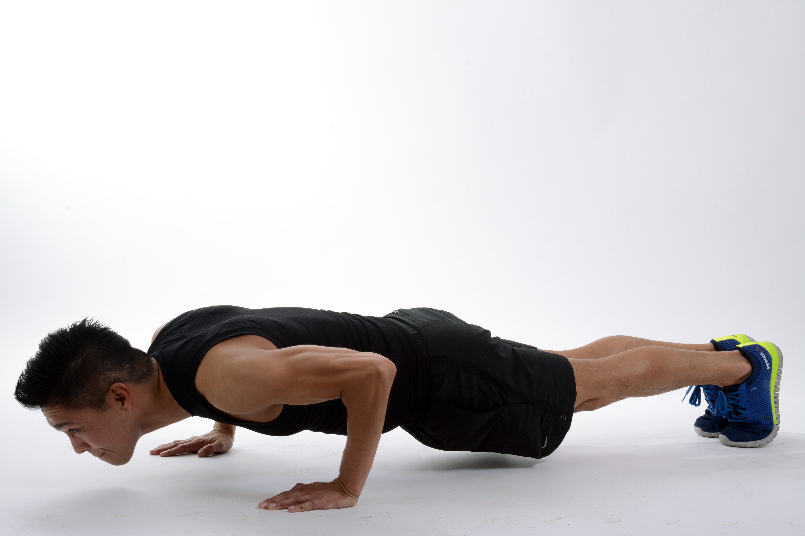

Zasady prawidłowego ćwiczenia
Prawidłowa technika ćwiczeń umożliwia wykonywanie ćwiczenia bezpiecznie oraz osiąganie maksymalnych wyników – siłowych i sprawnościowych. Nie istnieje jedna, perfekcyjna i uniwersalna technika wykonywania danego ćwiczenia. Technika ćwiczenia powinna być dopasowywana indywidualnie, mając na uwadze proporcje długości kończyn/tułowia ćwiczącego, jego wzrost, masę ciała, układ dźwigni, balans strukturalny, mobilność i cel treningowy. Można jednak wyróżnić kilka podstawowych zasad, które są prawidłowe dla niemal każdego ćwiczącego i niemal każdego ćwiczenia:
Wykonuj pełny zakres ruchu, chyba, że powoduje to ból/poważną utratę techniki
Trzymaj łopatki przybliżone do siebie i obniżone
Zachowaj kręgosłup w neutralnym ustawieniu
Korzystaj z jak najlepszej dźwigni
Technika ćwiczenia jest ważniejsza od ciężaru – dobra technika pozwala z czasem dochodzić do mistrzowskich ciężarów
Jeśli chcesz się nauczyć poprawnej techniki:

Ucz się czytając i oglądając filmy instruktażowe od różnych (!) specjalistów, porównuj, analizuj i wyciągaj własne wnioski
Współpracuj z osobą/osobami, które się na tym znają (dobrzy trenerzy, doświadczeni sportowcy
fizjoterapeuci),Obserwuj swoje ciało i na podstawie własnych odczuć dokonuj ewentualnych zmian i poprawek